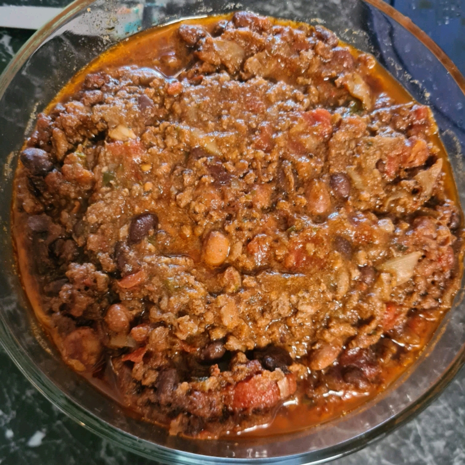

Home
Chilli Con Carne

Description
This Recipe can easily be multiplied and freezes well.
Ingredients
- 5 tablespoons vegetable oil
- 2 large onions, chopped
- 1 chile pepper, chopped
- 5 cloves garlic, chopped
- 2 pounds lean ground beef
- 3 (14.5 ounce) cans whole peeled tomatoes with liquid, chopped
- 1 1/2 teaspoons salt
- 1 teaspoon freshly ground black pepper
- 1 1/2 tablespoons ground cumin
- 1/2 tablespoon chili powder
- 2 tablespoons paprika
- 2 tablespoons dried oregano
- 2 cinnamon sticks
- 6 whole cloves
- 2 (15.25 ounce) cans red kidney beans, rinsed and drained
Directions
- In a medium sized stock pot, heat the oil over medium heat. Saute onion, chile pepper and garlic until soft. Add ground beef: cook and stir until meat is browned.
- Pour in tomatoes with liquid, salt, pepper, cumin, chili powder, paprika, oregano, cinnamon sticks, and cloves. Cover and simmer for 45 minutes.
- Stir in kidney beans, and cook another 15 minutes. Remove cinnamon sticks before serving.